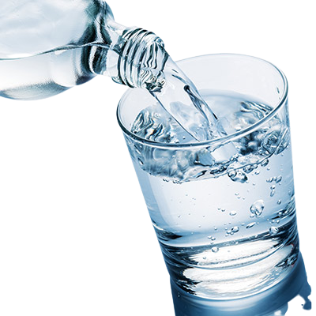
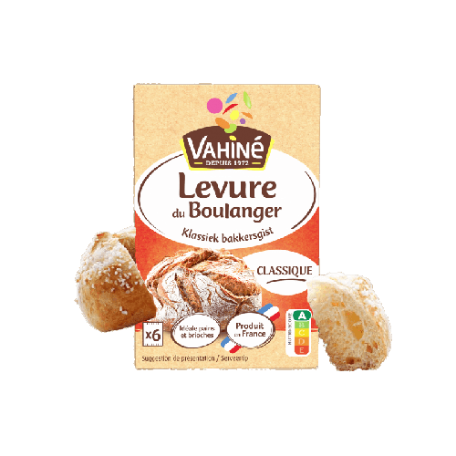
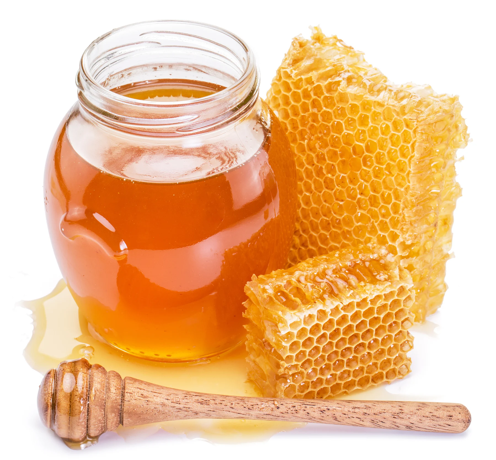
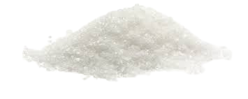
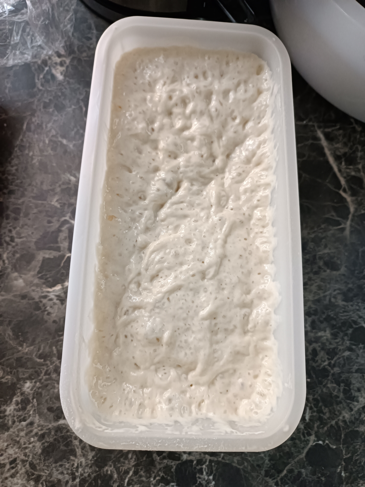
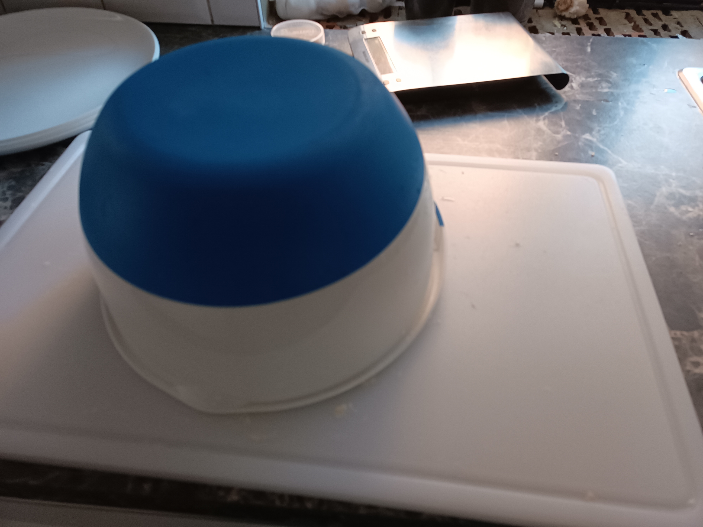
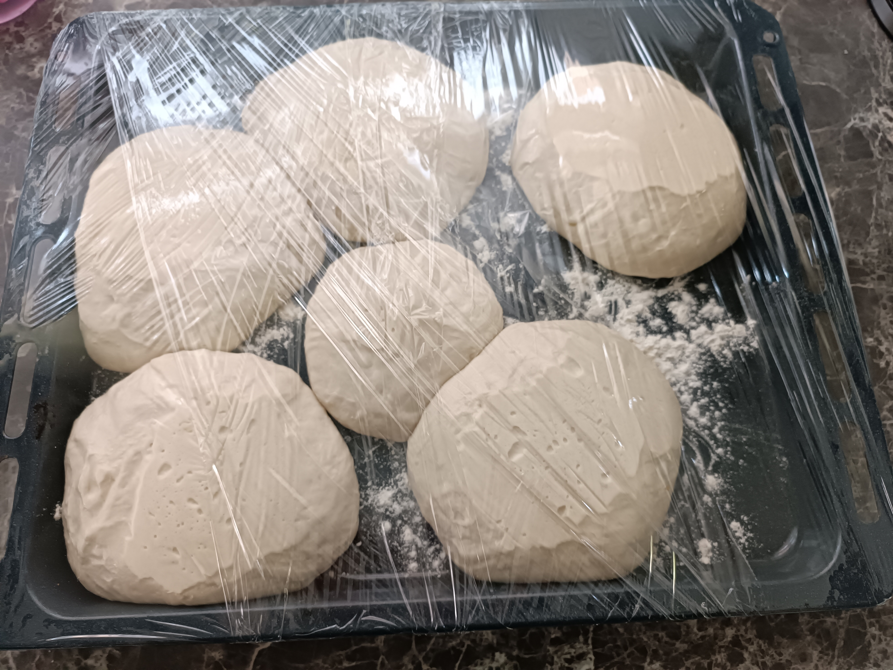

La pizza

Combien de personne?
Les ingrédients:
-
Le poolish
- 
200ml. d'eau
.png)
200gr. Farine
- 
6.7gr. levure sche(double pour la fraîche)
- 
6.7gr. de miel
-
La pâte
 poolish
poolish-
Eau 467ml
-
Farine 816gr
- 
Sel 27 gr
Les étapes:
-
Le poolish:
Mettre l'eau, la levure,le miel et bien mélanger, une fois la levure bien dissoute on vient ajouter la farine.
Attendre une heure à température ambiante et ensuite au frigo toute la nuit.
Résultat attendu:
 -
La pâte:
Mettre l'eau et le levain ensemble dans un grand bol, bien remuer jusqu'a parfaite dissolution.
Mettre la moitié de la farine dans le mélange, une fois un résultat homogène obtenu, ajouter le sel et bien remuer.
Enfin, ajouter la farine restante et mélanger jusqu'a ce que la pâte soit trop robuste/collante
verser le tout sur une surface(non fariné) et travailler a la main, jusqu'a ce que la pâte soit trop collante et homogène.
couvrir pendant 15 minutes.
 -
La boule:
Suivre cette vidéo pour faire la boule:
Ps: n'oublie pas de te huiler les mains avant de faire la boule, d'en recouvrir la surface et le fond du bol ;).
-
Les pâtons:
Après une heure d'attente, tu peux sortir la boule de pâte et en faire autant de patons que tu peux(300g le paton)
met les sur une plaque recouverte de farine et recouvre les d'un peu d'huile d'olive, ensuite enroule le tout de papier plastique.
Plus qu'a attendre deux heures
Résultat attendu:
 -
La pizza:
Bien joué, plus qu'a faire de jolie pizza
Tuto: